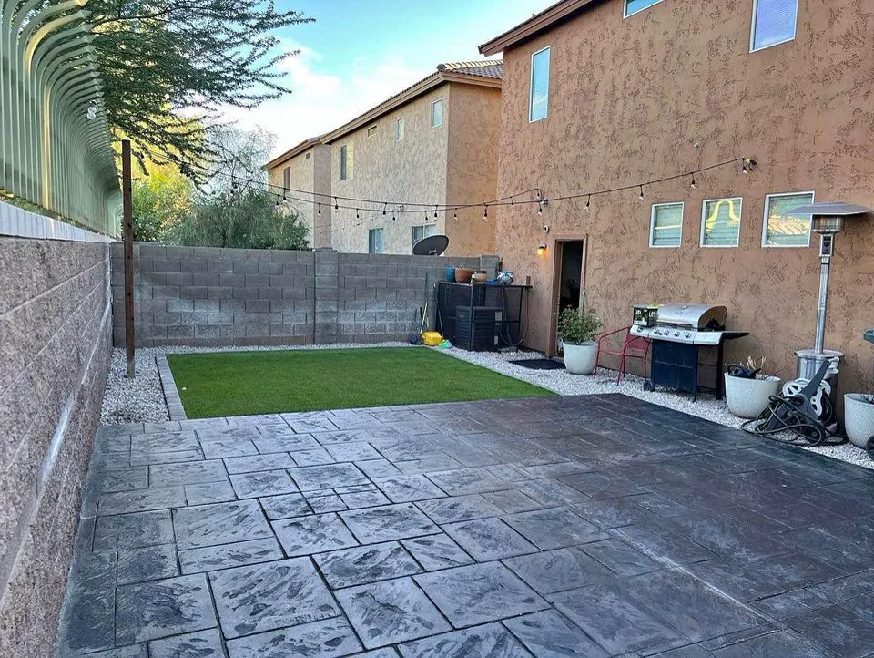
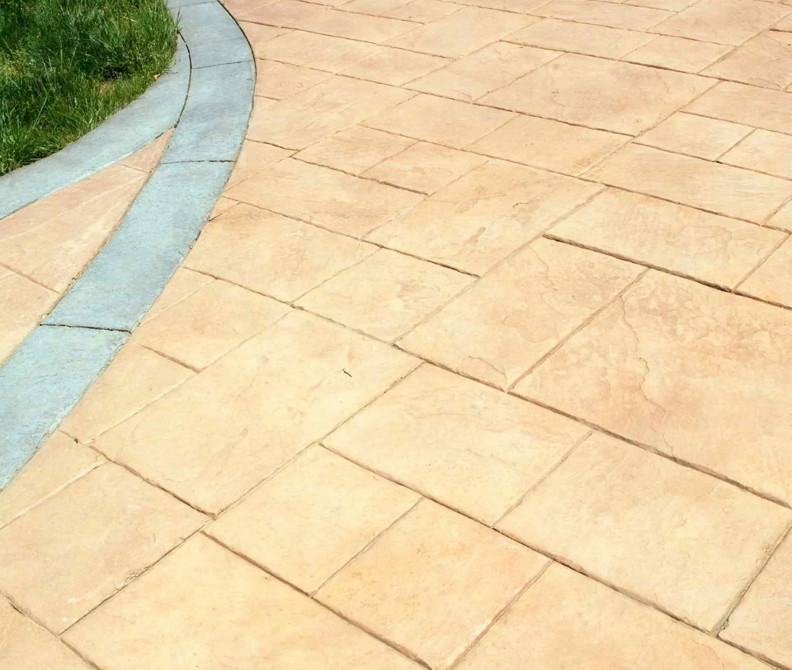

Concrete patio contractor in Gilbert, AZ
In Arizona a patio is where you spend the cool half of the year. East Valley Concrete builds stamped, stained and slab patios and paver patios across Gilbert and the East Valley, with colors and patterns to match the house.

- Licensed and insured
- Free in-person written estimates
- 4.9 stars from 37 Google reviews
What's included.
A patio slab sits in full sun and takes spills, furniture and foot traffic. Slope away from the house, where the joints land and how the surface is sealed decide whether it still looks good in five years.
- Stamped concrete patios that look like brick, slate or flagstone
- Concrete slab patios, sized and shaped to the space
- Decorative slab finishes such as exposed aggregate or acid stain
- Stained concrete patios, applied to a cleaned and etched surface
- Concrete patio pavers made with textured molds
- Sealers to protect color
How we do it.
-
Plan and choose
We lay out the size and shape and go over pattern, color and finish.
-
Prep the area
Set the forms and the base so the patio drains away from the house.
-
Place and finish
Pour, then stamp, stain or finish the surface the way you picked.
-
Seal
Apply a sealer to protect the color and make the surface easier to clean.
When a new patio makes sense.
If any of these sound familiar, the sooner someone looks at it the cheaper it usually is to fix.
- You want more usable outdoor space for the cool months
- The old slab is cracked, stained or sloped toward the house
- You want a patio to match a new pool deck or driveway
- You are adding a pergola, fire pit or outdoor kitchen
Our work.

Patios questions.
What is the difference between stamped and stained?
Stamping presses a pattern into the surface so it looks like brick, slate or flagstone. Staining changes the color of the concrete. They are often used together.
Can you stain my existing patio?
Often, yes. The surface is cleaned and etched first so the stain takes evenly, then sealed. A site visit shows whether your slab is a good candidate.
How hot do patios get in summer?
Dark colors and smooth surfaces hold the most heat. Lighter colors and textured finishes are more comfortable on bare feet, and we can talk through options.
Do you do paver patios too?
Yes. We install concrete patio pavers and other paver types. See our paver installation page for the full list.
Ready for the patio you actually use?
Call us, or send the details and we'll call you to set up a free in-person estimate.